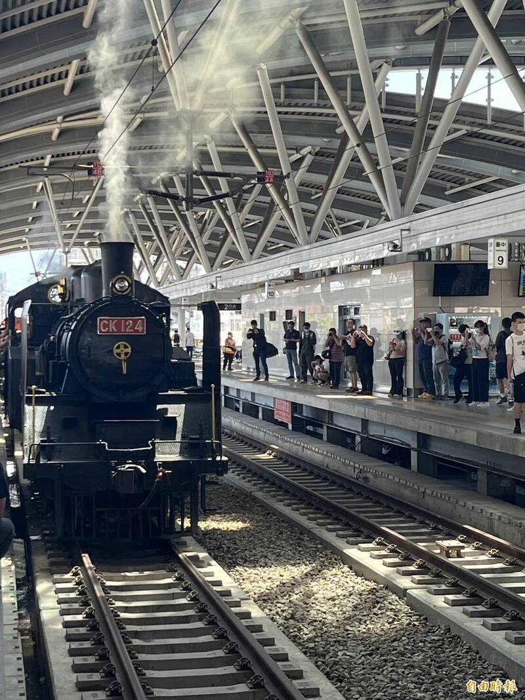
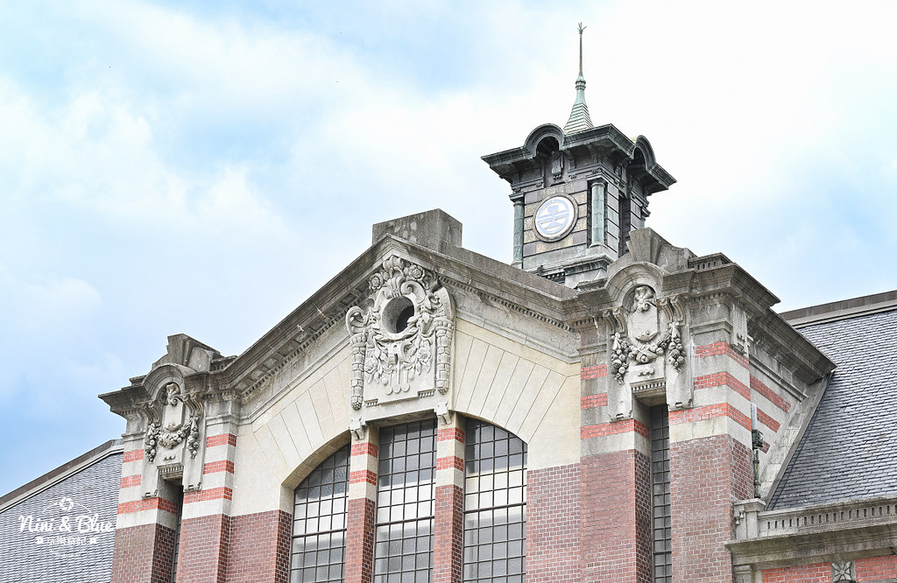

鐵道之魂：典藏舊火車與車廂介紹
近距離觸摸鋼鐵巨獸，感受大正與昭和時期的鐵道工藝。

經典蒸汽機關車
園區內展示的歷史車頭象徵著台灣鐵道起飛的黃金年代，訴說著無數次穿梭山線的傳奇故事。

懷舊木造與鋼製客車廂
停駐在舊月台旁的經典車廂內部，保留了復古座椅與燈飾，帶領參觀者走入時光隧道。
近距離觸摸鋼鐵巨獸，感受大正與昭和時期的鐵道工藝。

園區內展示的歷史車頭象徵著台灣鐵道起飛的黃金年代，訴說著無數次穿梭山線的傳奇故事。

停駐在舊月台旁的經典車廂內部，保留了復古座椅與燈飾，帶領參觀者走入時光隧道。